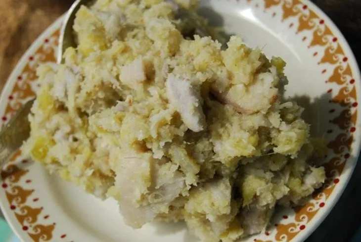
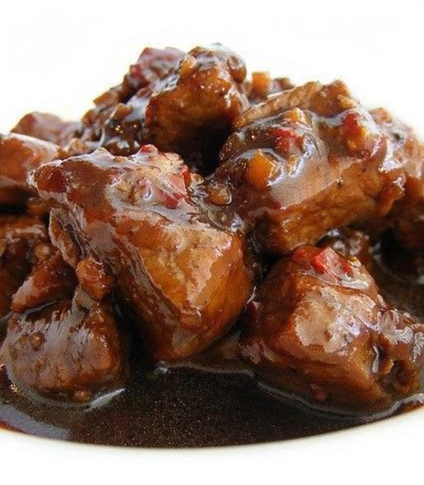
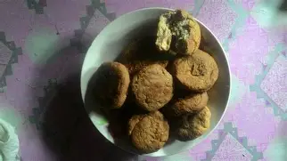
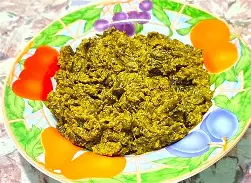

Jelajahi makanan khas Pulau Nias yang unik dan lezat

Olahan pisang tumbuk khas Nias dengan cita rasa manis dan unik.
🍌 Tradisional
Masakan daging babi khas Nias dengan bumbu sederhana namun lezat.
🥩 Favorit Lokal
Makanan ringan berbahan dasar kelapa dengan rasa gurih.
🥥 Snack Tradisional
Sayuran khas Nias yang diolah dengan cara tradisional.
🥬 Sehat